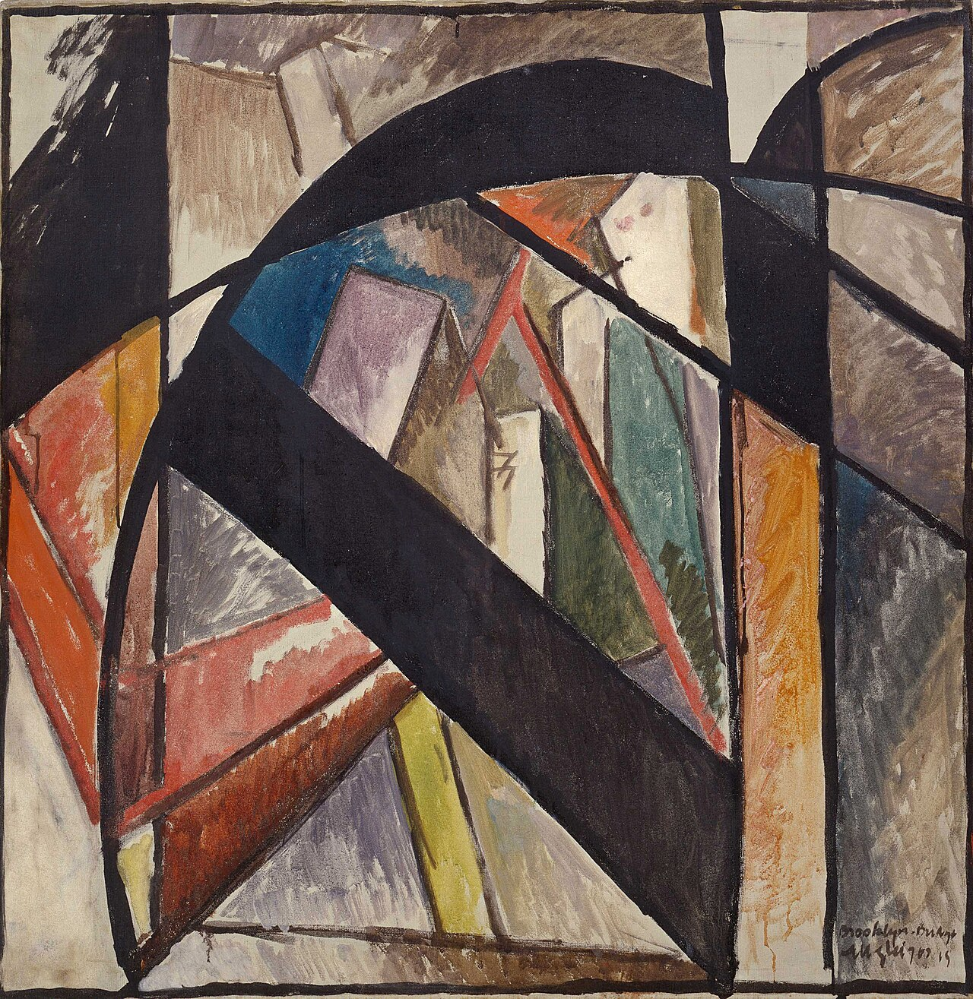
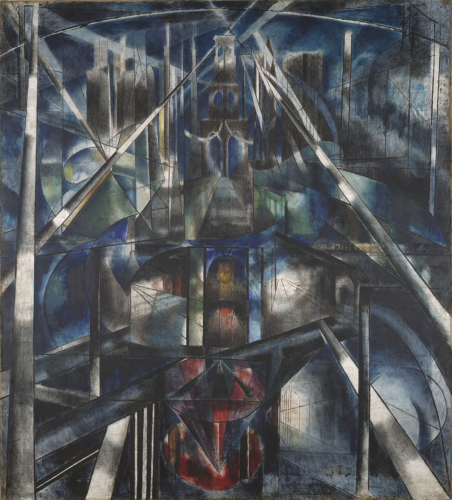

i'm dev, a hobbyist and dilletante living in brooklyn, new york.
i'm a consultant in my day job, currently working on social services + economic development for local governments, after some past work on ai + digital topics for corporate clients.
past lives in sustainable fashion and multidisciplinary research, and i still try to keep up.
my topics of interest are broadly under the umbrella of science and technology studies (sts).
always interested in opportunities for collaboration and discussion within:
artificial intelligence: cultural impact, labor / resource needs, theorizing artificial cognition
climate: collective action, supply chains, mass consumer behavior, environmental justice
digital culture: memetic transmission, online subcultures, internet / IRL boundaries
anti-tech: in-person social, anti-algorithmic curation, artistic / literary collectives
